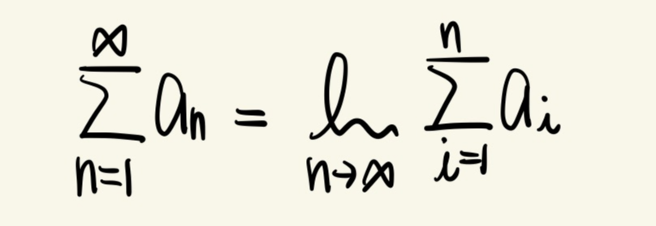
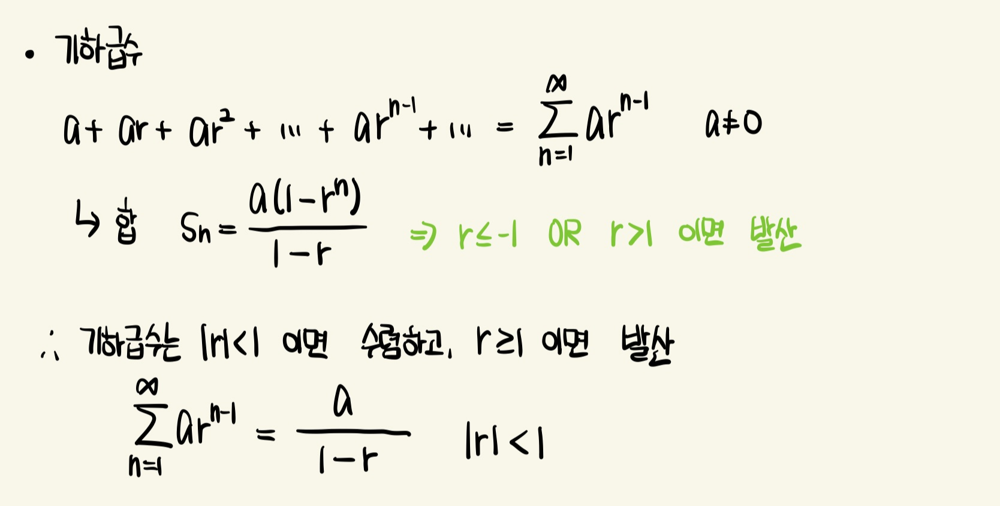
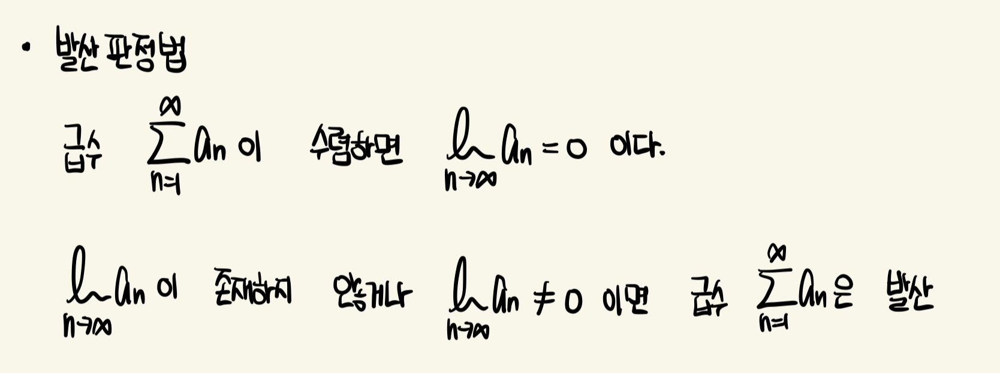
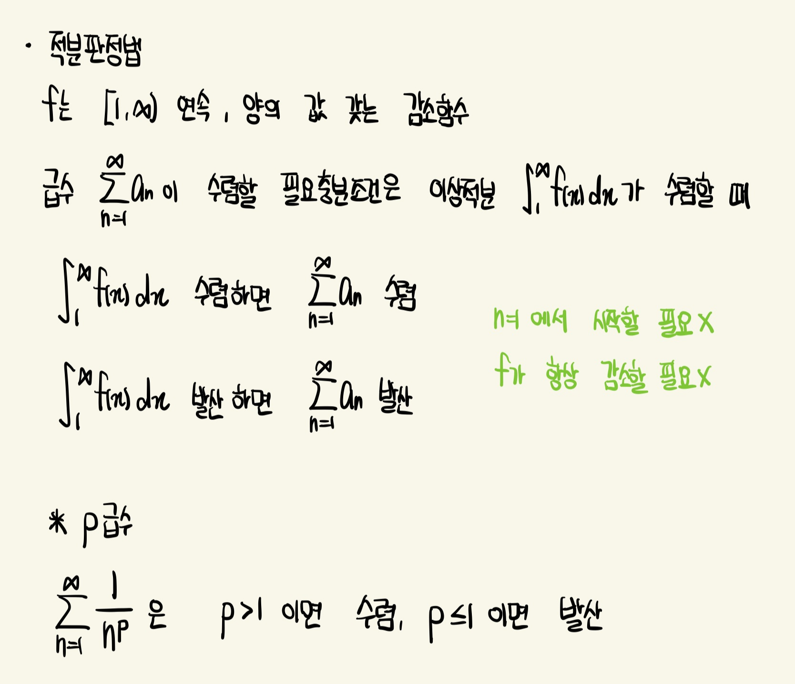
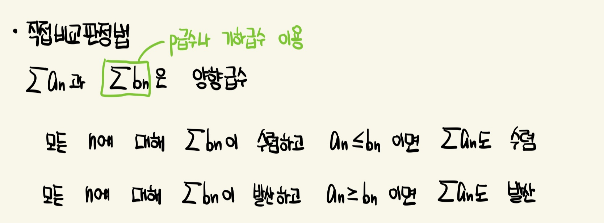
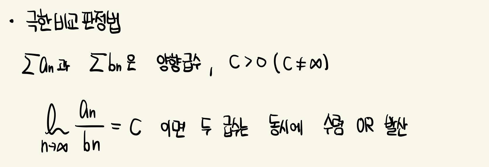
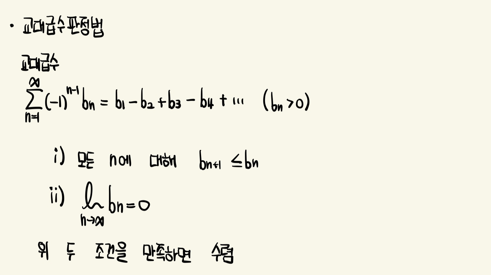
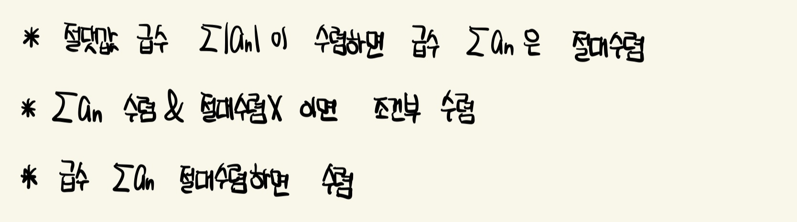
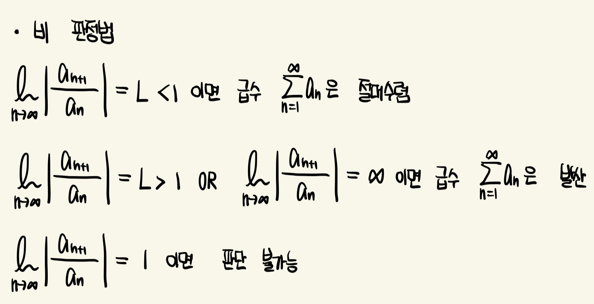
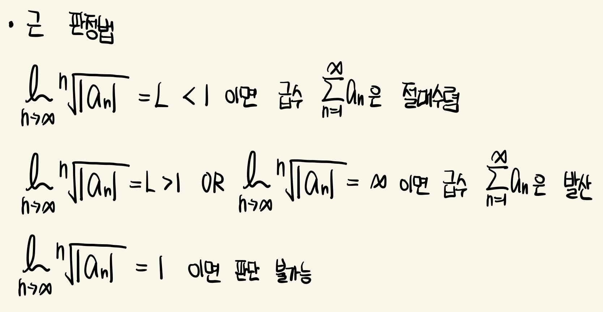

급수의 합은 부분합 수열의 극한
- 수열 : 수들의 나열
- 급수 : 합

기하급수
각 항은 이전 항에 공비 r을 곱하여 얻어짐

발산 판정법
급수의 부분합이 발산하면 그 급수는 발산함
아래 정리의 첫 번째의 역은 성립하지 않음
아래 정리의 두 번째에서 극한이 0이면 급수의 수렴이나 발산에 관한 어떤 것도 알 수 없음

적분 판정법
급수의 합을 구하지 않고 수렴과 발산을 결정할 수 있는 방법
적분값은 급수의 합이 아님

비교 판정법
수렴하는지 발산하는지 이미 알고 있는 급수를 이용함
직접 비교 판정법
각 항이 양수인 경우에만 적용

극한 비교 판정법
급수의 판정에서는 분모, 분자의 높은 차수의 항을 취하여 적당한 비교급수를 제작

교대급수 판정법
항이 반드시 양이 아닌 것을 다룸
- 교대급수 : 부호가 양과 음으로 교대로 바뀌는 급수

절대수렴 & 조건부 수렴

비 판정법
주어진 급수의 절대수렴 여부를 결정할 때 사용

근 판정법
n 제곱근이 나오는 경우 사용
